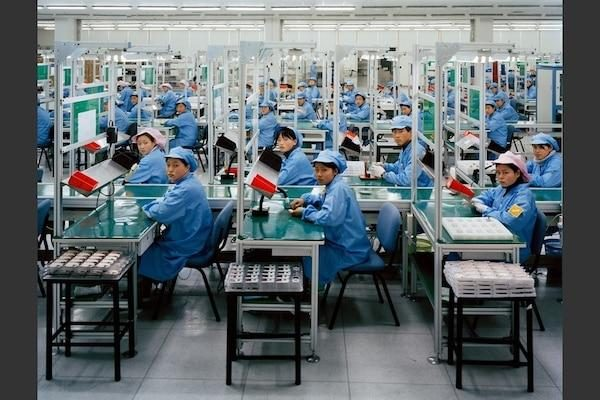
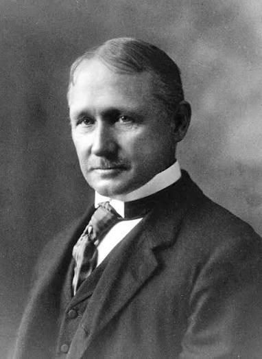
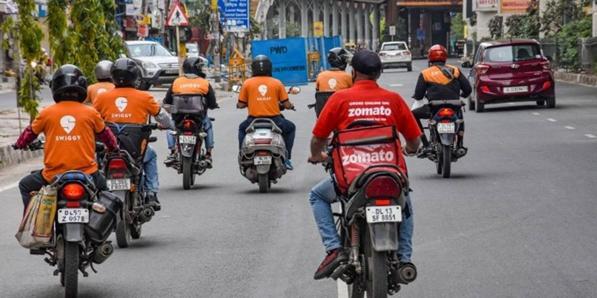
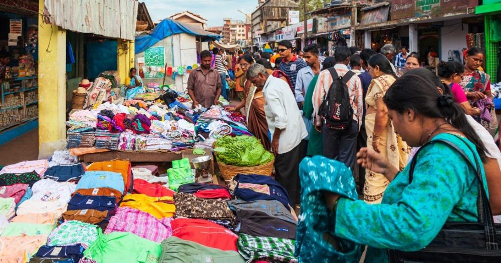

Sociology of Work and Economic LifeHigh priority
Anchor every answer in the mode of production, then bring India's informal economy, the labour codes and gender for the contemporary part.
Chapter map#
- Work and economic life
Historical forms
- Slave
- Feudal
- Capitalist
Industrial work
- Taylor
- Mayo
- POSDCORB
Contemporary work
- Services
- Globalisation
- AI and platforms
Gig economy
- Flexibility
- Precariat
- No social security
Alienation
- Marx
- Mills
- Marcuse
Formal and informal
- Weber
- Informal sector
- Labour codes
Gender and work
- Pink collar
- Pay gap
- Feminisation
Exam lens#
The story first#
In simple words#
- Work organisation follows the mode of production: slave (coerced), feudal (custom-bound), capitalist (contractual).
- Taylor = efficiency (one best way); Mayo = human relations (informal groups matter).
- Today: services, knowledge work, globalisation, gig work (precariat) and a huge informal sector in India.
- Alienation continues in new forms; gender bias persists in formal and informal work.
| Term | In plain words |
|---|---|
| Scientific management | Taylor's approach: study and standardise tasks for maximum efficiency. |
| POSDCORB | Gulick and Urwick's acronym for the functions of management. |
| Hawthorne experiments | Mayo's studies at Western Electric on informal groups and morale. |
| Knowledge economy | Drucker: economy of cognitive capital and knowledge workers. |
| Gig economy | Short-term, per-task platform work such as Uber, Zomato and Swiggy. |
| Precariat | Standing: new class with insecure income and uncertain work. |
| Informal sector | Unincorporated, small enterprises outside regulation (Sengupta Commission). |
| Labour commitment | Degree to which workers identify with the organisation. |
| Prosumer | Bruns: someone who is both producer and consumer of content. |
| Feminisation of informal labour | Rising concentration of women in low-paid informal work. |
1 · Sociology of Work and Economic Life#
- Work refers to the purposeful activity involving the expenditure of physical and/or mental effort aimed at producing goods and services that fulfill human needs.
- Conventionally, in a narrower sense, work is equated with paid employment conducted outside the home.
- However, a broader sociological understanding includes unpaid forms of labour such as domestic chores, caregiving, and volunteer work.
- This expanded definition recognizes that such activities, while uncompensated in monetary terms, are essential to the functioning of households, communities, and economies.
- People form important bonds at work Social Organization of Work in Different Types of Societies - Slave, Feudal and Capitalist Societies The organization of work is not merely an economic phenomenon but deeply embedded in the social, cultural, and political fabric of society.
- It changes with the mode of production and prevailing social relations.
- Work in Feudal and Capitalist Societies In feudal societies, work was predominantly agrarian and tied to traditional, inherited roles, often governed by caste, gender, and status hierarchies.
- In contrast, capitalist societies are marked by industrialization, market-oriented production, and a more differentiated, merit-based division of labor.
| Capitalist Society | Feudal Society |
|---|---|
| Predominantly based on manufacturing and industry | Predominantly based on agriculture and land-based economy |
| Complex division of labor with numerous specialized occupations | Simple division of labor with limited occupational roles |
| Occupations assigned based on skill, education, and merit | Occupations assigned on the basis of ascription (caste, gender, age) |
| Work is carried out in factories and industrial units | Work is carried out on farms and estates |
| Capitalist Society | Feudal Society |
|---|---|
| High volume of production with economies of scale | Limited production, mainly for subsistence |
| Greater efficiency due to specialization and technology | Lower productive efficiency, relying on traditional methods |
| Utilizes advanced technology and mechanization | Uses simple, traditional tools and techniques |
| Focus on mass production and standardized goods | Produces handcrafted, diverse goods |
| Workforce is heterogeneous and socially mobile | Workforce is homogeneous, often bound by fixed social roles |
2 · Work in Slave Society and Feudal Society#

- The nature of work and labour relations in human history has evolved significantly, shaped by the dominant mode of production in each historical period.
- In both slave and feudal societies, agrarian production was the central economic activity.
- However, the organization of work, the status of labourers, and the levels of productive efficiency differed sharply.
- Slavery was prevalent in ancient Egypt
| Aspect | Slave Society | Feudal Society |
|---|---|---|
| Main Classes | Masters and Slaves | Lords and Serfs |
| Type of Economy | Agrarian - mainly plantation-based with rudimentary tools | Agrarian - more advanced farming techniques, control over water resources |
| Technology and Efficiency | Low technological development, low quantum and efficiency of production | Improved tools, higher productivity, and greater efficiency |
| Aspect | Slave Society | Feudal Society |
|---|---|---|
| Status of Labourers | Slaves were considered chattel - property with no rights, not even over their bodies; barred from reproduction to avoid numerical threat | Serfs were not property; enjoyed limited rights including some ownership (e.g. tools) and could reproduce |
| Source of Labour Force | New slaves were acquired through conquest, especially inter-tribal warfare | New serfs came primarily through natural reproduction within the serf population |
| Incentives to Work | No incentive - slaves were given mere subsistence, leading to low motivation | Serfs worked under a sharecropping system, receiving a portion of the produce, offering economic incentive |
- The evolution of the social organization of work across slave, feudal, and capitalist societies reflect profound shifts in the nature of labour relations, ownership, technology, and the status of workers.
- Thus, the historical progression from slavery to feudalism to capitalism shows a shift from coerced labour to custom-bound labour to contractual wage labour .
- Each system shaped not only the economy but also the very identity, autonomy, and social relations of individuals, highlighting the centrality of work in shaping human societies.
3 · Work in Modern Industrial Society#


- With the rise of industrialization, the nature and organization of work have undergone a fundamental transformation.
- Work is no longer just about physical labor; it involves complex coordination, administration, and planning.
- In this context, management plays a central role in ensuring productivity, efficiency, and industrial harmony.
4 · Scientific Management#


- Management refers to the process of planning, organizing, coordinating, and controlling the activities of an organization to achieve its objectives effectively and efficiently.
- A popular acronym POSDCORB - coined by Luther Gulick and Lyndall Urwick - captures the key functions of management.
- In his book Principles of Scientific Management (1911),Frederick W.
- Taylor proposed that management is a science, not an art.
- F.W. Taylor (1856-1915) His approach emphasized maximum efficiency and productivity in industrial work through scientific analysis of tasks.
- He believed that both workers and employers would benefit from efficient practices that increase output and profits.
- Key Features of Scientific Management: 1.
- Scientific Job Analysis:Break down complex tasks into small, simple units and study each part to improve efficiency.
- 2. Scientific Selection of Workers: Choose workers best suited to specific tasks based on their skills, aptitude, and temperament.
- 3. Scientific Training: Train workers methodically to perform tasks the most efficient way.
- 4. Management-Worker Cooperation: Foster close collaboration between managers and workers for mutual benefit.
- 5. One Best Way: For every task, there exists a "one best way" to do it - least time, least cost, maximum output.
- 6. Time and Motion Studies: Use empirical observation and analysis to find the most efficient method of working.
- 7. Joint Responsibility for Efficiency: Both management and workers should strive for better productivity and reduced wastage.
- 8. "Mental Revolution": Change in mindset among workers and employers to view each other as partners, not adversaries.
- Impact:
- Inspired Henry Ford’s assembly line model, which was replicated in various automobile companies and later, in other industries as well.
- Increased productivity and industrial discipline.
- Helped make industrial production faster, cheaper, and more predictable.
5 · Human Relations Approach#
- The Human Relations School emerged in response to the mechanistic and impersonal nature of Taylorism.
- Elton Mayo’s work, based on Hawthorne Experiments (1920s-30s) at Western Electric, Chicago emphasized the psychological and social aspects of work, rather than just the physical or mechanical.
- Key Insights: 1. Informal Group Dynamics Matter: Informal social relationships and morale significantly influence productivity.
- 2. Supervisory Style Impacts Output: Authoritarian, one-way communication reduces productivity.
- Friendly, inclusive, two-way communication enhances it.
- Workers seek recognition and belonging .
- Feeling valued and being consulted increases their commitment to work.
- 3. Monetary Incentives Have Limited Role: Experiments like the Bank Wiring Room study showed that monetary incentives alone did not raise productivity.
- Informal group norms were stronger.
- 4. Informal Organization Exists Within Formal Organization: Workers form informal groups with their own norms, roles, and rules.
- Management should recognize and integrate informal leaders for better outcomes.
- Implications:
- Promote participatory management and workplace democracy.
- Focus on motivation, communication, job satisfaction.
- Recognized the human and social dimension of labor.
- The evolution of work in modern industrial society has been marked by a shift from mechanistic approaches to more human-centered management philosophies.
- While Taylor’s Scientific Management emphasized efficiency and task optimization, Mayo’s Human Relations Approach highlighted the importance of human emotions, group dynamics, and communication.
- Together, they laid the foundation for modern organizational behavior studies, influencing HR practices, and leadership styles in the 20th century.
6 · Work in Contemporary Society#
- The nature of work in contemporary society is increasingly shaped by the dominance of the service sector, marking a transition from the earlier industrial model to what sociologists term a post-industrial society.
- While the industrial era - beginning in the 19th century - was driven by capitalist manufacturing and mass production, the mid-20th century, especially in the West, witnessed a paradigm shift.
- Scholars like Daniel Bell and Alain Touraine have extensively studied this transformation, identifying the rise of the tertiary, quaternary, and quinary sectors - services, research and development, and high-level decision-making roles, respectively - as central to post-industrial economies.
- In this new structure, most people are no longer employed in agriculture or manufacturing, but in services like finance, healthcare, education, IT, and media.
- The typical blue-collar worker is now increasingly replaced by white-collar professionals with formal qualifications.
- The economy is no longer centred on physical labour or material production but rather on the generation, processing, and dissemination of information and knowledge.
- This is what Peter Drucker termed the knowledge economy, populated by "knowledge workers" whose capital is cognitive.
- Social networks and digital platforms such as LinkedIn, WhatsApp, Instagram, and X have become key arenas of economic and professional activity, further dissolving the boundaries between work and social life.
- From a Marxist perspective, this phase is referred to as late capitalism.
- Scholars like Mandel argue that late capitalism is characterised by the globalisation of capital flows , the integration of markets , and the emergence of multinational corporations that transcend national boundaries.
- These shifts reflect deeper structural changes in capitalist mode of production and the organisation of labour.
- Globalisation has transformed the nature of labour by integrating national labour markets with the global economy.
- It has increased outsourcing, contractual employment, labour migration, and global production networks.
- New employment opportunities have emerged in sectors such as IT, finance, business process outsourcing, and other services.
- At the same time, global competition has encouraged labour market flexibility, expanded informal and temporary employment, weakened trade unions in many sectors, increased job insecurity, and widened income inequalities.
- Thus, globalisation has created new opportunities for employment while also making work more insecure and competitive.
- Rapid technological advancement in fields of artificial intelligence, robotics, and digitalisation are transforming the nature of work across the world.
- Routine manual and repetitive cognitive jobs are increasingly being automated, while demand is growing for workers possessing advanced technical, analytical, and digital skills.
- New forms of employment such as platform work, remote work, and digital freelancing have expanded rapidly.
- While technological change improves productivity and creates new occupations, it also contributes to job displacement, skill polarization, income inequality, and growing employment insecurity.
- As a result, continuous skill upgradation and lifelong learning have become essential features of contemporary work.
- In sum, the post-industrial society has fundamentally redefined the meaning, organisation, and experience of work.
- While it brings new opportunities for innovation, flexibility, and global integration, it also poses fresh challenges of insecurity, informality, and inequality, demanding robust policy responses.
7 · Gig Economy#


- A striking feature of contemporary work is the rise of the gig economy.
- The gig economy refers to a labour market characterized by short-term, flexible, and freelance work arrangements where workers are paid per ‘gig’ or task rather than receiving a regular salary.
- It signifies a shift from traditional employment relationships to non-standard forms of employment.
- This form of economy has grown rapidly with the rise of digital platforms like Uber, Zomato, and Swiggy.
- In the United States, it is estimated that nearly one-third of the workforce is engaged in such short-term contractual work, indicating the growing normalization of this model.
- Gig workers are a very visible part of the urban landscape in India The gig economy offers several benefits.
- For corporations, it significantly reduces employment costs and overheads.
- Customers benefit from faster and more customised services.
- For workers, the model offers greater flexibility and autonomy, allowing them to choose when and how much to work.
- This has led to new patterns of work like flexi-time , remote work , and work-from-home, allowing employers to cut costs and expand scalability.
- Many organisations today are employee-less, relying entirely on a floating pool of gig workers.
- The gig economy has significantly changed labour markets by increasing labour market flexibility and creating new income opportunities.
- However, it has also led to growing informalisation within formal sectors, as seen in delivery, transport, and tech services in India.
- Lack of unionisation of gig workers erodes their collective bargaining due to individualized contracts and segregated workforce.
- Importantly, gig workers usually lack statutory social security benefits such as provident fund, gratuity, paid leave, health insurance, and pension.
- Consequently, many scholars describe gig employment as creating a new class of precarious workers.
- According to Guy Standing, gig workers can be classified as part of the "precariat " - a new class with insecurity of income, low wages, and uncertain work.
- Surveillance and rating systems create new forms of control and alienation, echoing Marx’s idea of alienated labour.
- Jamie Woodcock points out the continuous algorithmic control and digital surveillance in platform capitalism, while offering an illusion of flexibility and workers’ autonomy.
- For the gig workers, their work also seeps into personal time and space without clear demarcation.
- This is in stark contrast to the ‘office-hours’ based commitment of traditional forms of labour.
8 · Alienation in Contemporary Times#
- The concept of alienation was first developed by Karl Marx in the context of early industrial capitalism of the 19th century.
- Marx argued that under capitalism, the worker becomes alienated from the product of labour, the process of labour, fellow human beings, and ultimately, from their own essence as creative beings.
- This was largely due to exploitative working conditions - long hours, hazardous environments, monotonous machine-based work, and total lack of control over the means of production.
- Many GenZ employees have an ‘I don’t care’ attitude towards work However, with the transformation of capitalism - especially in advanced capitalist societies - many of these harsh conditions have undergone significant changes.
- Worker protections, minimum wage laws, reduced working hours, and welfare measures have emerged.
- Trade unions and collective bargaining have empowered workers.
- Moreover, new human resource practices such as job enrichment, job rotation, and skill enhancement have been designed to foster worker engagement and reduce alienation.
- In addition, the nature of work has changed .
- The service sector has overtaken manufacturing, and many workers now interact with people rather than machines.
- Moreover, today workers work fewer hours on average than the early days of industrial capitalism.
- They have more leisure time and options to pursue satisfying activities outside of work; be it spending time with family or recreational activities.
- As a result, many critics argue that the idea of alienation is less relevant today.
- Yet, despite these changes, scholars have reformulated the concept of alienation to apply it in the context of 20thand 21stcentury economies.
9 · Contemporary Reinterpretations of Alienation#

- The concept of alienation has been analysed and reinterpreted by contemporary scholars to explain how alienation is relevant today, even if not precisely as Marx explained it.
- 1.Alienation in Service Sector C. Wright Mills observed that in service sector jobs, skills with things have been replaced by skills with people.
- A new "personality market " has emerged where workers must present a curated version of themselves.
- Workers in service sector often perform emotional labour, masking their true feelings.
- Thus, alienation persists in the form of inauthenticity, even in people-oriented jobs.
- People aren’t their true selves at the workplace 2.Leisure and Alienation Herbert Marcuse, a neo-Marxist, argued that advanced capitalism alienates not only at work but also in leisure.
- Mass media consumption, driven by advertising, creates false needs and enforces passive consumption.
- People associate identity with consumer goods, and even leisure becomes commodified.
- Thus,leisure becomes an extension of alienated labour, rather than its antidote.
- 3. Recent developments reflect alienation in contemporary societies.
- The Great Resignation in USA saw large-scale quitting by highly paid knowledge workers during and after the Covid pandemic, suggesting dissatisfaction and emotional burnout despite financial rewards.
- 4.Alienation in Creator Economy: On platforms like Instagram or YouTube, people are both producers and consumers of content, or, as Axel Bruns calls them,prosumers.
- They generate content for attention, validation, and money; often curating personas based on what is socially desirable.
- This commodifies the self and sustains alienation as individuals are unable to express their authentic selves.
- While the nature of work, economy, and society has drastically changed since Marx’s time, the concept of alienation remains highly relevant.
- Scholars have shown how alienation has adapted to new contexts: from machine-based factory work to emotional labour in service jobs, from industrial drudgery to curated selves on social media, and from oppressive work environments to manipulative leisure.
- Alienation today is more subtle and psychological, but no less pervasive.
- It continues to shape the human experience in complex and evolving ways under advanced capitalism.
- The above discussion also demonstrates that better pay may not translate into labour commitment.
- Labour commitment refers to the degree to which workers identify with their organisation and remain dedicated to its goals.
- High labour commitment generally leads to greater productivity, lower absenteeism, improved industrial relations, and organisational stability.
- Studies such as Goldthorpe's Affluent Worker study showed that higher wages alone do not necessarily create stronger commitment, as workers may remain primarily instrumentally oriented towards employment.
- The Hawthorne experiments also demonstrated that other than money, workers’ commitment may be sought through friendly supervision and participatory decision making.
- Modern organisations therefore seek to improve labour commitment through employee participation, better working conditions, training, incentives, and effective human resource management.
10 · Formal and Informal Organization of Work#


- In the study of modern work, one important analytical distinction is between formal and informal organization.
- This interpretation is rooted in classical organizational theory, most notably that of Max Weber, and later critiques by scholars like Peter Blau and Elton Mayo.
- Formal Organization Max Weber outlined the ideal type of bureaucracy as the most efficient and rational form of formal organization in modern industrial society.
- It is characterized by: Clearly defined hierarchy: Authority is distributed in a structured chain of command.
- Specialization and division of labor: Each position has a defined role and function.
- Rule-bound operations: Procedures are governed by written rules and regulations.
- Impersonality: Decisions are based on rules, not personal preferences.
- Weber believed that such a structure enabled predictability, accountability, and efficiency in the workplace.
- Informal Organization While Weber’s model emphasized rationality and structure, later sociologists pointed out that real organizations also function through informal processes, which can significantly shape worker behavior and productivity.
- Human Relations Approach: Elton Mayo’s famous Hawthorne Studies (1920s-30s) revealed that workers' productivity was influenced not just by working conditions or financial incentives, but by social relations and group dynamics.
- This approach showed that: o Informal groups form within formal organizations. o These groups create their own norms, values, and expectations. o Human emotions, interpersonal relations, and recognition matter deeply at the workplace. o Informal organization can both support and subvert formal rules.
- Peter Blau’s Analysis of Bureaucracies: Peter Blau critiqued the Weberian emphasis on formal organization by demonstrating that: o Informal practices often emerge as adaptive responses to rigid formal rules. o Bureaucrats use discretion, informal cooperation, or reciprocal arrangements to efficiently carry out tasks. o Thus, informal interactions are not anomalies, but essential for the smooth functioning of formal structures.
- This interpretation shows that while formal organizations like Weberian bureaucracies provide the structural skeleton of work, it is the informal organization - social ties, group norms, and human relations - that often brings it to life.
- Contemporary sociology recognizes that both formal and informal elements are interdependent and together shape the nature and quality of work in any modern organization.
- Work in the Formal and Informal Sectors The distinction between formal and informal organization of work is not just structural (as seen in Weberian and post-Weberian organizational theory), but also economic.
- In the sectoral sense, formal and informal refer to two broad categories of employment and enterprise arrangements.
- In a country like India, where labour-intensive, low-productivity sectors continue to dominate, this distinction has become a critical lens to understand the nature of work and the challenges of labour regulation.
- Informal sector in India is huge. A weekly informal market (like in the pic above) temporarily comes up on the roads in many Indian cities Defining Informal Sector The informal sector is broadly defined by the absence of regulation and legal protection.
- According to the National Commission for Enterprises in the Unorganised Sector headed by Arjun Sengupta, the informal/ unorganised sector consists of all unincorporated private enterprises owned by individuals or households engaged in the production and sale of goods & services, operating as proprietorships or partnerships, and employing less than ten workers.
- Other definitions emphasize similar characteristics.
- The International Labour Organization defines informal enterprises as those employing only a handful of workers, using simple equipment, and operating outside the ambit of laws and regulation.
- Narul Amin defines the informal sector as encompassing all economic enterprises and forms of employment not protected or regulated by law and not covered by the social security system.
- In India, informal workers include agricultural labourers, domestic workers, small and marginal farmers, bidi makers, construction workers, scavengers, and countless self-employed or casually employed individuals in petty trades and services.
- The informal sector plays a particularly vital role in the developing economies.
- It is the largest source of employment, particularly for poor, migrant, and low-skilled workers who are unable to find jobs in the formal sector.
- It absorbs surplus labour released from agriculture, provides low-cost goods and services, promotes self-employment and entrepreneurship, and often acts as a safety net during periods of economic crisis.
- At the same time, excessive dependence on the informal sector in the developing countries reflects structural problems such as unemployment, low productivity, poverty, and inadequate social security.
- Thus, while the informal sector supports livelihoods, its dominance also highlights the incomplete process of economic development.
- Globalisation and Informality Contrary to the expectation that globalisation would formalise the economy, there has been a steady informalisation of the workforce in India and many other developing countries.
- This is due to several interlinked reasons:
- Cost-cutting pressures have made firms increasingly rely on informal labour to remain competitive in global markets.
- Labour laws are being increasingly diluted or simplified to attract foreign capital, which has led to a rise in contractual and informal work.
- India's economic growth has been largely jobless, with the formal sector failing to generate employment opportunities proportionate to economic output.
- The service sector, while contributing most to GDP, often requires high skill levels that many workers do not possess, leading them to enter informal services instead.
- Economic crises, such as the 2008 global recession and the COVID-19 pandemic, often lead to layoffs in the formal sector, pushing workers into informal work.
- Outsourcing from developed to developing countries have also led to the transfer of production activities into more unregulated environments to gain cost advantages, contributing to the global spread of informal work.
- Implications of Informalisation Expansion of informal work carries significant consequences for workers and the economy:
- Low and unstable income leads to widespread material deprivation.
- There is a direct linkage between informality and poverty, as highlighted by scholars like Martha Chen and Sethuraman, who observe a higher incidence of poverty among informal workers.
- Lack of social security - no minimum wages, no pension or healthcare benefits, and no legal protection - exposes informal workers to multiple vulnerabilities.
- Low productivity is a hallmark of informal work, due to absence of skill training, low technology use, and poor incentive structures.
- Gender inequality is especially pronounced in the informal sector.
- Women, owing to lower education and skill levels, are disproportionately concentrated in informal jobs, and the wage gap is wider than in the formal sector. o Informalisation of men pushes women further down the hierarchy of informal work. o Women's informal work is often concentrated in more vulnerable and lower-paying roles such as food vending, domestic labour, or perishable goods sales.
- Challenges in Regulating Informal Work The informal sector poses immense challenges for governance and policy-making:
- 1. Data scarcity: Most of the statistics are estimates, with little documentation or reliable records.
- 2. Policy ambiguity: Existing labour laws and welfare schemes are often unsuited to the realities of informal employment.
- 3. Global competitiveness: Informal enterprises struggle to compete unless specific support programs are initiated.
- To simplify labour regulation, the Indian government has recently consolidated numerous labour laws into four labour codes.
- The four labour codes are the Code on Wages (2019), Industrial Relations Code (2020), Code on Social Security (2020), and Occupational Safety, Health and Working Conditions Code (2020).
- These reforms seek to simplify compliance, improve ease of doing business, extend social security to more categories of workers, and promote labour market flexibility.
- However, critics argue that they may weaken collective bargaining, encourage contractual employment, reduce job security, and may not adequately protect informal workers.
- What is crucial is the effective implementation of these labour codes.
- Work From Home
- A young couple engaged in Work From Home The concept of working from home gained prominence during the COVID-19 pandemic, particularly in the IT and service sectors.
- However, home-based work has long existed in India’s informal economy in forms like bidi making , papad and pickle production, and handicrafts, often undertaken by women with little economic recognition or protection.
- The formal-informal divide is not just a binary but a spectrum of employment arrangements, with increasing overlap in the globalised and digital age.
- In India, where the bulk of the workforce continues to operate in informal conditions, any policy on labour, poverty alleviation, or economic growth must grapple with the realities of informality.
- While globalisation and technological change promise modernisation, they have also entrenched informal work unless accompanied by inclusive reforms and social protections.
- Formalising the informal remains both an ethical imperative and a policy challenge for the 21st century.
- Gender and Work Gender continues to shape opportunities, working conditions, and rewards in both the formal and informal sectors.
- On the face of it, the formal sector of the economy rejects gender bias and aims at gender diversity and inclusivity at the workplace.
- While women have entered professional occupations in increasing numbers, formal workplaces are not free from gender discrimination.
- Women face occupational segregation (pink collarization), gender pay gaps, the glass ceiling, sexual harassment, and the motherhood penalty that slows career advancement.
- Balancing paid work with domestic responsibilities further limits women's opportunities despite legal safeguards such as the POSH Act and equal wage provisions.
- Moreover, women are disproportionately concentrated in informal employment such as domestic work, home-based production, street vending, agriculture, and small-scale services.
- This process, often referred to as the feminization of informal labour, provides employment opportunities but is usually associated with low wages, insecure employment, lack of social security, absence of maternity benefits, poor working conditions, and limited opportunities for skill development.
- Consequently, women continue to experience greater economic vulnerability than men.
Traps#
| Trap | What goes wrong, and the rule |
|---|---|
| Taylor vs Mayo | Taylor: efficiency through scientific analysis; Mayo: social and psychological factors and informal groups. Exam-hall rule: Taylor = task; Mayo = people. |
| Slave vs feudal society | Slaves were chattel with no rights; serfs were tied to land and lords but not property. Exam-hall rule: slave = owned; serf = bound. |
| Formal vs informal organisation and sector | The handout uses 'formal and informal' for both the structure inside organisations and the sectors of the economy. Exam-hall rule: state which sense you are using. |
| Better pay does not equal commitment | Goldthorpe and Hawthorne show higher wages alone do not create labour commitment. Exam-hall rule: add participation and supervision. |
| Alienation is not gone | Alienation has been reformulated: emotional labour, commodified leisure, creator economy. Exam-hall rule: say 'subtler, not absent'. |
Recall sheet#
Read once, hide it, then rebuild the chapter from memory.
- Narrow vs broad meaning of work? Paid employment vs also unpaid domestic, caregiving and volunteer work
- Shift of labour relations across eras? Coerced, then custom-bound, then contractual wage labour
- Taylor's book and year? Principles of Scientific Management, 1911
- Who coined POSDCORB? Luther Gulick and Lyndall Urwick
- Whose line inspired Ford's assembly line? Taylor's scientific management
- Hawthorne experiments by? Elton Mayo, Western Electric, 1920s-30s
- Bank Wiring Room showed? Money alone did not raise productivity; informal norms were stronger
- Who coined the knowledge economy? Peter Drucker
- Who studied tertiary, quaternary, quinary sectors? Daniel Bell and Alain Touraine
- Guy Standing's class? Precariat
- Mills on service work? Personality market; skills with people
- Marcuse on leisure? Commodified; extension of alienated labour
- Who calls content creators prosumers? Axel Bruns
- Affluent Worker study by? Goldthorpe
- Sengupta Commission is about? Unorganised (informal) sector
- Four labour codes? Wages, Industrial Relations, Social Security, Occupational Safety
Abbreviation column#
| Short form | Full form | One-line meaning |
|---|---|---|
| POSDCORB | Planning, Organising, Staffing, Directing, Co-ordinating, Reporting, Budgeting | Functions of management |
| ILO | International Labour Organization | Defines informal enterprises |
| POSH | Prevention of Sexual Harassment | Act named in the gender section |
| BPO | Business Process Outsourcing | New employment sector |
| PYQ | Previous Years' Questions | Questions UPSC has already asked |
Revise#
| Day | What to do |
|---|---|
| Day 0 | Read the Exam lens and the notes; mark the chapter done |
| Day +1 | Recall sheet: read once, hide, rebuild |
| Day +3 | Flashcards: missed ones only |
| Day +7 | Quick quiz; fix each miss against the Traps |
| Day +21 | Write two Mains answers from memory using the skeletons |
| Day +45 | Blank-page test: redraw the chapter map |
Test yourself#
Quick quiz
Flashcards
Tap the card to flip.
Mains answer skeletons
One for each Mains PYQ quoted in the handout. Tap to open; try the answer first.
2025 · 10 marks · Do you think that formal workspaces are free of gender bias? Argue your case
Question. Do you think that formal workspaces are free of gender bias? Argue your case
- Intro: name Sociology of Work and Economic Life and state the central idea in one line (see The story first).
- Body: build the answer from the notes under: Formal and Informal Organization of Work.
- Close: finish with the matching criticisms section and a one-line judgement.
2025 · 10 marks · Critically analyze the sociological significance of informal sectors in the economy of developing so…
Question. Critically analyze the sociological significance of informal sectors in the economy of developing societies.
- Intro: name Sociology of Work and Economic Life and state the central idea in one line (see The story first).
- Body: build the answer from the notes under: Formal and Informal Organization of Work.
- Close: finish with the matching criticisms section and a one-line judgement.
2024 · 10 marks · Describe the differing principles of work organization in feudal and capitalist societies.
Question. Describe the differing principles of work organization in feudal and capitalist societies.
- Intro: name Sociology of Work and Economic Life and state the central idea in one line (see The story first).
- Body: build the answer from the notes under: Work in Slave Society and Feudal Society; Work in Modern Industrial Society.
- Close: finish with the matching criticisms section and a one-line judgement.
2024 · 20 marks · Define the concept of ‘gig’ economy and discuss its impact on labour market and workers social secur…
Question. Define the concept of ‘gig’ economy and discuss its impact on labour market and workers social security net.
- Intro: name Sociology of Work and Economic Life and state the central idea in one line (see The story first).
- Body: build the answer from the notes under: Gig Economy.
- Close: finish with the matching criticisms section and a one-line judgement.
2023 · 20 marks · Explain how economic globalization has brought changes in the patterns of employment in the 21st cen…
Question. Explain how economic globalization has brought changes in the patterns of employment in the 21st century.
- Intro: name Sociology of Work and Economic Life and state the central idea in one line (see The story first).
- Body: build the answer from the notes under: Work in Contemporary Society; Formal and Informal Organization of Work.
- Close: finish with the matching criticisms section and a one-line judgement.
2022 · 20 marks · Explain the implications of feminization of work in the developing societies.
Question. Explain the implications of feminization of work in the developing societies.
- Intro: name Sociology of Work and Economic Life and state the central idea in one line (see The story first).
- Body: build the answer from the notes under: Formal and Informal Organization of Work.
- Close: finish with the matching criticisms section and a one-line judgement.
2022 · 20 marks · What characterizes degradation of work in capitalist society according to Marx?
Question. What characterizes degradation of work in capitalist society according to Marx?
- Intro: name Sociology of Work and Economic Life and state the central idea in one line (see The story first).
- Body: build the answer from the notes under: Work in Slave Society and Feudal Society; Work in Modern Industrial Society; Alienation in Contemporary Times.
- Close: finish with the matching criticisms section and a one-line judgement.
2021 · 20 marks · Elucidate the main problems and challenges faced by the migrant labourers in the recent ‘Lockdown pe…
Question. Elucidate the main problems and challenges faced by the migrant labourers in the recent ‘Lockdown period’.
- Intro: name Sociology of Work and Economic Life and state the central idea in one line (see The story first).
- Body: build the answer from the notes under: Formal and Informal Organization of Work.
- Close: finish with the matching criticisms section and a one-line judgement.
2021 · 10 marks · Explain the emerging challenges in establishing gender equality in the informal sector.
Question. Explain the emerging challenges in establishing gender equality in the informal sector.
- Intro: name Sociology of Work and Economic Life and state the central idea in one line (see The story first).
- Body: build the answer from the notes under: Formal and Informal Organization of Work.
- Close: finish with the matching criticisms section and a one-line judgement.
2021 · 20 marks · How has the idea of ‘Work from Home’ forced us to redefine the formal and informal organization of w…
Question. How has the idea of ‘Work from Home’ forced us to redefine the formal and informal organization of work?
- Intro: name Sociology of Work and Economic Life and state the central idea in one line (see The story first).
- Body: build the answer from the notes under: Formal and Informal Organization of Work.
- Close: finish with the matching criticisms section and a one-line judgement.
2020 · 20 marks · Discuss the new labour codes and their impact on formal and informal labour in India.
Question. Discuss the new labour codes and their impact on formal and informal labour in India.
- Intro: name Sociology of Work and Economic Life and state the central idea in one line (see The story first).
- Body: build the answer from the notes under: Formal and Informal Organization of Work.
- Close: finish with the matching criticisms section and a one-line judgement.
2020 · 20 marks · Capitalism has brought increasing informalisation of work in society. Substantiate your answer.
Question. Capitalism has brought increasing informalisation of work in society. Substantiate your answer.
- Intro: name Sociology of Work and Economic Life and state the central idea in one line (see The story first).
- Body: build the answer from the notes under: Formal and Informal Organization of Work.
- Close: finish with the matching criticisms section and a one-line judgement.
2019 · 20 marks · What is 'informal labour’? Discuss the need for and challenges in regulating informal labour in the …
Question. What is 'informal labour’? Discuss the need for and challenges in regulating informal labour in the post-industrial society
- Intro: name Sociology of Work and Economic Life and state the central idea in one line (see The story first).
- Body: build the answer from the notes under: Work in Modern Industrial Society; Formal and Informal Organization of Work.
- Close: finish with the matching criticisms section and a one-line judgement.
2019 · 10 marks · What is 'reserve army of labour’? Present the position of feminist scholars on this.
Question. What is 'reserve army of labour’? Present the position of feminist scholars on this.
- Intro: name Sociology of Work and Economic Life and state the central idea in one line (see The story first).
- Body: build the answer from the notes under: Formal and Informal Organization of Work.
- Close: finish with the matching criticisms section and a one-line judgement.
2018 · 20 marks · What is labour commitment? Discuss it with reference to studies of manufacturing industry.
Question. What is labour commitment? Discuss it with reference to studies of manufacturing industry.
- Intro: name Sociology of Work and Economic Life and state the central idea in one line (see The story first).
- Body: build the answer from the notes under: Contemporary Reinterpretations of Alienation.
- Close: finish with the matching criticisms section and a one-line judgement.
2017 · 20 marks · Trace the changing nature of organisation of work in capitalist society over the years.
Question. Trace the changing nature of organisation of work in capitalist society over the years.
- Intro: name Sociology of Work and Economic Life and state the central idea in one line (see The story first).
- Body: build the answer from the notes under: Work in Slave Society and Feudal Society; Work in Modern Industrial Society.
- Close: finish with the matching criticisms section and a one-line judgement.
2017 · 10 marks · What do you understand by 'informalisation of labour’? Write your answer with special reference to I…
Question. What do you understand by 'informalisation of labour’? Write your answer with special reference to India.
- Intro: name Sociology of Work and Economic Life and state the central idea in one line (see The story first).
- Body: build the answer from the notes under: Formal and Informal Organization of Work.
- Close: finish with the matching criticisms section and a one-line judgement.
2016 · 10 marks · Describe the nature of social organization of work in industrial society.
Question. Describe the nature of social organization of work in industrial society.
- Intro: name Sociology of Work and Economic Life and state the central idea in one line (see The story first).
- Body: build the answer from the notes under: Work in Modern Industrial Society.
- Close: finish with the matching criticisms section and a one-line judgement.
2016 · 20 marks · "Globalization has pushed the labour into informal organization of work." Substantiate your answer w…
Question. "Globalization has pushed the labour into informal organization of work." Substantiate your answer with suitable examples.
- Intro: name Sociology of Work and Economic Life and state the central idea in one line (see The story first).
- Body: build the answer from the notes under: Work in Contemporary Society; Formal and Informal Organization of Work.
- Close: finish with the matching criticisms section and a one-line judgement.
2015 · 20 marks · The increasing importance of the tertiary sector has weakened the formal organization of work in rec…
Question. The increasing importance of the tertiary sector has weakened the formal organization of work in recent times. Examine the statement.
- Intro: name Sociology of Work and Economic Life and state the central idea in one line (see The story first).
- Body: build the answer from the notes under: Work in Contemporary Society.
- Close: finish with the matching criticisms section and a one-line judgement.
2015 · 10 marks · Distinguish between the social organization of work in feudal society and in capitalist society.
Question. Distinguish between the social organization of work in feudal society and in capitalist society.
- Intro: name Sociology of Work and Economic Life and state the central idea in one line (see The story first).
- Body: build the answer from the notes under: Work in Slave Society and Feudal Society; Work in Modern Industrial Society.
- Close: finish with the matching criticisms section and a one-line judgement.
2014 · 10 marks · What are the distinctive features of social organization of work in slave society? How is it differe…
Question. What are the distinctive features of social organization of work in slave society? How is it different from feudal society?
- Intro: name Sociology of Work and Economic Life and state the central idea in one line (see The story first).
- Body: build the answer from the notes under: Work in Slave Society and Feudal Society.
- Close: finish with the matching criticisms section and a one-line judgement.
2013 · 20 marks · Examine the social impact of globalization on labour and society.
Question. Examine the social impact of globalization on labour and society.
- Intro: name Sociology of Work and Economic Life and state the central idea in one line (see The story first).
- Body: build the answer from the notes under: Work in Contemporary Society; Formal and Informal Organization of Work.
- Close: finish with the matching criticisms section and a one-line judgement.